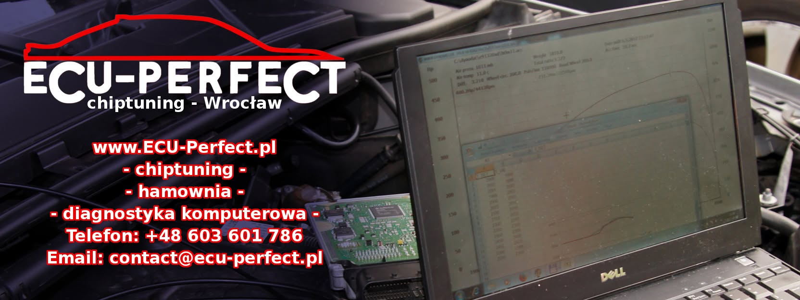

Realizacje, wyniki z hamowni, ciekawe przypadki z warsztatu i bieżące informacje. Wpadnij, zostaw like i napisz, jeśli masz pytanie o swoje auto.
Indywidualny chiptuning z pomiarem mocy oraz diagnostyką komputerową.
Szacuje moc i moment silnika diesla na podstawie obrotów, dawki paliwa (mg/suw), doładowania, lambdy i pojemności. Opcjonalnie uwzględnia dyszę nitro.
Szacuje moc i moment turbodoładowanego silnika benzynowego z doładowania, VE lub MAF, lambdy i paliwa (benzyna, E85, mieszanki). Podpowiada też przepływ powietrza i rozmiar wtryskiwaczy.
Liczy obwód opony (np. 225/55 R17) i pokazuje zamienniki o najbliższym obwodzie z różnicą w cm i w procentach oraz wpływem na prędkościomierz.
Szacuje moc silnika na podstawie masy auta i zmierzonego czasu przyspieszenia od 100 do 200 km/h.
Prędkość na każdym z 8 biegów z obrotów silnika, przełożeń skrzyni, dyferencjału i rozmiaru opon.
kW, KM (PS), HP oraz Nm, lb-ft, kGm – plus przeliczanie mocy na moment przy zadanych obrotach.
Wiki o sterownikach (ME7, MS4x, Simos, EDC17), kody błędów BMW i VAG, narzędzia do tuningu, kalkulatory turbo i katalogi części – z krótkim opisem każdej strony.
Wyniki kalkulatora są orientacyjne i nie zastępują pomiaru na hamowni.
Najszybciej telefonicznie lub przez Facebooka.